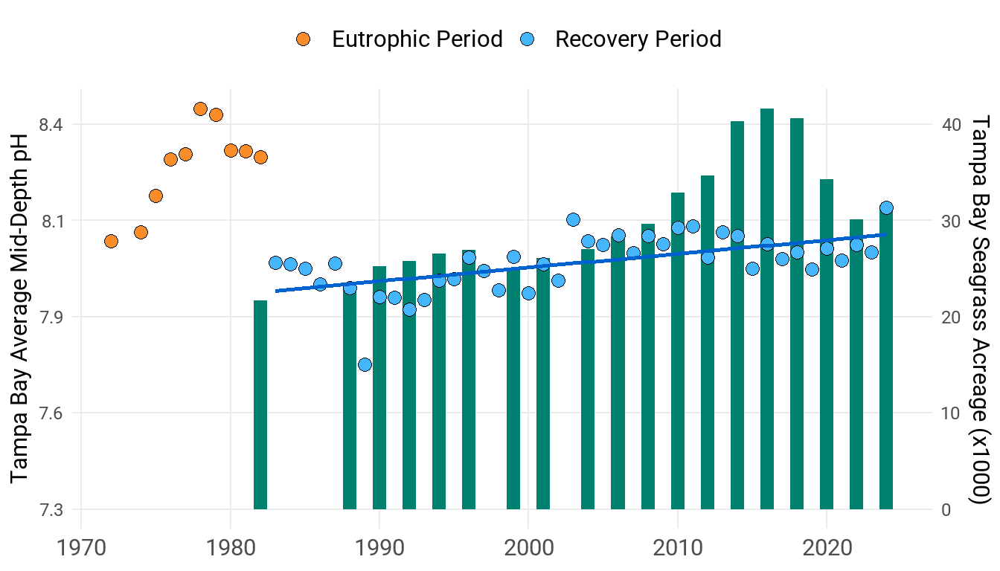

CC-2
Understand and address effects of ocean acidification
OBJECTIVES:
Improve understanding of acidification status of Tampa Bay. Examine potential role of seagrasses in Tampa Bay to buffer ocean acidification trends in the Gulf of Mexico and provide refuges for organisms vulnerable to increasing acidification. Include ocean acidification issues and mitigation solutions in outreach and education materials.
STATUS:
New Action
BACKGROUND:
Despite the vast size of the oceans, data show that ocean chemistry has shifted in response to increased carbon dioxide in the atmosphere. Carbon dioxide reacts with seawater to produce carbonic acid, increasing the acidity (lowering the pH) of seawater. This phenomenon, known as ocean acidification (OA), has produced a 30% increase in ocean acidity since the Industrial Revolution (a decrease in pH of 0.11). As the concentration of carbon dioxide in the atmosphere increases, the ocean absorbs more of it, and as surface layers gradually mix into deep water, the entire ocean is affected.

The decrease in ocean pH disrupts the balance of minerals in the water and makes it more difficult for marine organisms such as shellfish, plankton and corals to produce and maintain calcium carbonate, the primary component of their hard skeletons and shells. Ocean acidification can cause deformities in larval stages of organisms, increasing mortality. In some species of shellfish and fish, especially in the juvenile stages, OA can also impair metabolism, immune system, sensory functions and reproduction. This can impact the entire marine food web and negatively affect recreational and commercial fisheries.
Long-term water quality monitoring data from the Environmental Protection Commission of Hillsborough County (EPCHC) indicates that pH in the Tampa Bay estuary has actually steadily increased (become more basic) since the 1980s, as local management strategies improved water quality and seagrass abundance. Seagrasses are expected to benefit from elevated atmospheric carbon dioxide through increased primary productivity, and photosynthesis can increase seawater pH and availability of the mineral calcium carbonate. Thus, seagrasses may provide an ocean acidification refuge to organisms closely associated with seagrass beds, particularly shellfish and other economically important fish species. A TBERF funded study by Eckerd College and USGS found that seagrass may buffer impacts of ocean acidification on crabs in pH ranges from 7.5-8.2.
Through December 2022, TBEP and the US Geological Survey continued a collaborative project to monitor carbon system parameters within the Tampa Bay estuary and nearshore Gulf. The program examined the extent to which seagrass recovery has helped buffer the chemical impacts of ocean acidification. Sampling in seagrass beds and adjacent bare substrates evaluated the role of seagrass beds in maintaining and elevating pH, spatial and temporal differences within the estuary, as well as the effects of inflow and circulation. The site near Port Manatee continues to be maintained by USGS without further support from the TBEP Work Plan.

Actions already being taken to reduce CO2 emissions from the burning of fossil fuels will help slow the effects of ocean acidification. Furthermore, conserving and restoring marine habitats will strengthen ecosystem resilience to climate change and enhance ecosystem health (See Actions CC-1, BH-1, FW-3 and FW-6).
Reducing nutrient loading to estuaries can also help prevent acidification caused by excess CO2 production when nutrient-fueled algal blooms die and decay. Continuing to manage nutrient loading to Tampa Bay is therefore an important action that also helps address global ocean acidification (see Actions WQ-1, WQ-3, SW-1, SW-8 and SW-10). ( )
.